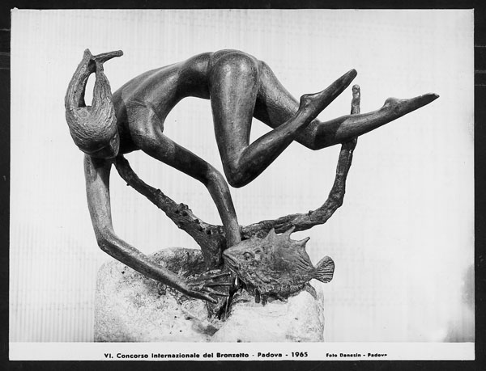

Vitaliano De Angelis L'ARTISTA

Biografia
-

1916 - 1941
Vitaliano De Angelis nasce a Firenze nel 1916, qui studia all'Istituto e al Magistero d'Arte, allievo dello scultore Bruno Innocenti.
I riconoscimenti alla sua attività di scultore iniziano presto: nel 1940 e nel 1941 ottiene due primi premi alla prima e alla seconda Mostra Provinciale di Pittura e Scultura G. Moriani alla Bottega d’Arte a Livorno.“La Dri” (1941) (figura).
-

1946 - 1949
Nel 1946 a Firenze ottiene il primo premio “La Pira” per la scultura con cui partecipa alla Mostra Interregionale di Arte Sacra; nel 1947 la Galleria d’Arte Moderna di Palazzo Pitti acquista una sua scultura in cera “Ricordo di Franca” (figura) e, per il Gabinetto Disegni e Stampe degli Uffizi, due disegni. Nello stesso anno partecipa alla Mostra del Gruppo Arte d’Oggi, alla Galleria Firenze, a Firenze. con un gruppo di artisti che cerca di risvegliare una maggiore libertà di espressione e una cosciente presa di posizione nelle arti figurative.
Sono gli anni del secondo dopoguerra e De Angelis prende parte con scritti, conferenze e disegni, alle polemiche sulle arti, partecipa con Vinicio Berti, Cassinari, Farulli, Grazzini, Guttuso, Lardera, Vedova, Venturi ed altri a numerose mostre. Nel 1949 ottiene un premio acquisto dalla Galleria d’Arte Moderna di Palazzo Pitti alla Mostra Nazionale per la Ricostruzione del Ponte a Santa Trinita a Firenze.
-
1946 - 1957
Nel 1951 partecipa con Gatti, Grazzini e Bruno Rosai alla mostra In Vetrina, alla Galleria La Strozzina di Palazzo Strozzi a Firenze (in figura Il filosofo).
Nel 1952 vince il Concorso per una Lampada Votiva alla SS Annunziata e gli viene commissionata la realizzazione di una lampada votiva in argento da collocare nella cappella della basilica dedicata alla SS Annunziata a Firenze. Nello stesso anno inizia ad insegnare a Lucca, all’Istituto d’Arte “A. Passaglia”, dove resterà fino all’età della pensione.
Nel 1955 realizza, su commissione del Comune di Livorno, il Busto in bronzo di Amedeo Modigliani, che viene situato nel Parco del Museo Civico “Villa Fabbricotti” a Livorno. Un anno dopo realizza, in collaborazione con lo scultore Giulio Guiggi, su commissione del Comune di Livorno, il monumento in bronzo a Il Villano , che viene posto in piazza Barontini a Livorno. E’ del 1957 la realizzazione, sempre su commissione del Comune di Livorno, del busto in bronzo del patriota Enrico Bartelloni, collocato in piazza San Marco, sulle vecchie mura della città di Livorno.
-

1957 - 1968
A partire dal 1956 si reca spesso a Parigi, dove inizia una lunga e proficua esperienza grafica. Nel 1959 ottiene un premio per la scultura alla X Mostra Nazionale Premio del Fiorino, alla Galleria dell’Accademia a Firenze. L’opera Subacqueo (figura) viene destinata alla Galleria d’Arte moderna di Palazzo Pitti.
Due anni più tardi realizza una Mostra Personale alla Galleria Falsetti di Prato ; nel 1962 l’Accademia delle Arti del Disegno di Firenze lo nomina Accademico Corrispondente per la classe di Scultura.
Nel 1965 realizza, su commissione del Comune di Livorno, il Monumento ai Caduti civili di Guerra , collocato in via Fiume a Livorno.
Nel 1966, insieme ai pittori Faraoni e Grazzini illustra "Luna Fu" del poeta Marcello Landi.
Nel 1968 vince con l’opera “Subacqueo” il primo premio per la scultura alla V Mostra Nazionale Arte e Sport, Palazzo dei Congressi a Firenze.
-
1969 - 1991
Negli anni seguenti partecipa, come scultore e come grafico, a rassegne in Italia e all'estero. Numerose le personali, tra le quali si ricordano quelle presentate da L. Castelli, V. Corti, R. Franchi, R. Grazzini, B. Nardini. A Firenze è presente, alla Strozzina, in un ciclo di mostre selezionate e dirette da Carlo Ludovico Ragghianti e presentate dal poeta Bruno Nardini. Da segnalare anche la mostra al Centro Artistico "Il Grattacielo" di Livorno, presentata da Oscar Gallo e Silvano Giannelli. Nel 1970 alla Galleria d'Arte Moderna "Farsetti" di Prato una sua personale viene selezionata e presentata da Giuseppe Marchiori e Mario Tobino. (figura)
Nel 1974 partecipa alla VIII Mostra Nazionale Arte e Sport, Palazzo dei Congressi a Firenze , e nel 1978 alla Mostra Toscana Scultura, Palagio Fiorentino a Stia. .
Sempre da "Farsetti", nel 1982, l'esposizione dei suoi lavori è curata e presentata da Nicola Micieli. Vedi catalogo Lo stesso critico, nel 1987, presenta un'altra mostra personale dello scultore a Palazzo Marino (Rosignano Marittimo). Vedi catalogo Nel 1990 opere di De Angelis figurano nella mostra itinerante Arte Moderna per un paese antico (a Civitella in Val di Chiana, Certaldo e Cascina) con quelle di un gruppo di artisti italiani.
-
1992 - 1997
Nel 1992 espone a Livorno in una personale organizzata dal Circolo Ufficiali della Marina. Vince il Concorso per il Monumento al Marinaio a Livorno con il progetto Le vele (figura). Nello stesso anno partecipa alla Mostra del Libro d'Arte degli Incisori Italiani del 900 (Poemi incisi)- tra i quali figurano De Chirico, Burri, Licini ... - che ha luogo al Museo d'Arte Moderna di New York.
Nel 1995 diciotto disegni di De Angelis entrano a far parte del Gabinetto Disegni e Stampe della Galleria degli Uffizi a Firenze; nel 2003 altri dieci disegni sono acquisiti dallo stesso Gabinetto Disegni e Stampe. Nel 1997 ancora una personale, Mostra dell’Opera Incisa, al Gabinetto Disegni e Stampe di Villa Pacchiani a Santa Croce sull’Arno, con donazione delle opere al Museo.
-
2000 - 2002
Nel 2000 espone sculture e disegni prima a Montecatini Terme nella sede dell’Ente del Turismo, poi a Verona alla Galleria d’Arte Giorgio Guelfi. (figura)
Nell’inverno 2000/20001 partecipa alla 52° Mostra del Gruppo Labronico ai Bottini dell’Olio, a Livorno. Sul suo lavoro hanno espresso giudizi e scritto su quotidiani e riviste specializzate: Annigoni, Baldini, Bargellini, Biancale, Brandi, Budigna, Burattin, Busignani, Carlesi, Carli, Carrà, Casorati, Corti, De Chirico, De Grada, Fasolo, Landi, Lardera, Lisi, Marchiori, Masetti, Micieli, Nudi, Parronchi, Sciortino, Seroni, Toesca, Valsecchi, Vettori, Volpe.
Ha vissuto e lavorato a Livorno, dove è morto il 19 aprile 2002.
-
2006 - 2010
Nel 2006 è stata realizzata ai Granai di Villa Mimbelli a Livorno, la mostra antologica “Persistenza della forma” – disegni e sculture dal 1945 al 2000 a cura del Comune di Livorno e della Fondazione Cassa di Risparmi di Livorno. Nel 2007 la Galleria d’Arte Factory, ha presentato “Assolutamente donna” una mostra personale di sculture e disegni.
Nel 2008 una mostra itinerante di disegni dedicati a Parigi, organizzata dall’Alliance Francese di Livorno in collaborazione con la Delegazione generale dell’Alliance Française de Paris in Italia, ha coinvolto numerose città italiane e francesi. Nel mese di agosto, all’Ippodromo F. Caprilli di Livorno, l’Associazione culturale La Caprillina presenta “Vitaliano De Angelis: 7 Bronzi grandi”.
Dal dicembre 2009 a febbraio 2010 l’Istituto d’Arte A. Passaglia di Lucca si è tenuta la mostra “Luce scolpita” sculture di Vitaliano De Angelis fotografate da Giorgio Conti.